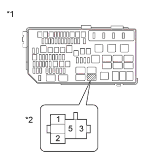

DTC P0416 Secondary Air Injection System Switching Valve "B" Circuit Open |
DTC P0417 Secondary Air Injection System Switching Valve "B" Circuit Shorted |
| DTC No. | DTC Detection Condition | Trouble Area |
| P0416 | Open or short in the air injection VSV relay (AI-VSV) circuit for 3 seconds (1 trip detection logic). |
|
| P0417 | Open or short in the air injection VSV relay (AI-VSV) circuit for 3 seconds (1 trip detection logic). |
|
| Required Sensors/Components | Air injection VSV relay (AI-VSV) |
| Required Sensors/Components | ECM |
| Frequency of Operation | Continuous |
| Tester Display | Description |
| NORMAL |
|
| ABNORMAL |
|
| INCOMPLETE |
|
| UNKNOWN |
|
| 1.INSPECT AIR INJECTION VSV RELAY (AI-VSV) |
Inspect the air injection VSV relay (AI-VSV) (Click here).
|
| ||||
| OK | |
| 2.CHECK AIR INJECTION VSV RELAY (AI-VSV) (POWER SOURCE) |
Remove the air injection VSV relay (AI-VSV).
|  |
Measure the voltage according to the value(s) in the table below.
| Tester Connection | Switch Condition | Specified Condition |
| Air injection VSV relay (AI-VSV) terminal 2 - Body ground | Engine switch on (IG) | 11 to 14 V |
| Air injection VSV relay (AI-VSV) terminal 5 - Body ground | Engine switch on (IG) | 11 to 14 V |
| *1 | Engine Room Relay Block |
| *2 | Air Injection VSV Relay (AI-VSV) |
Reinstall the air injection VSV relay (AI-VSV).
|
| ||||
| OK | |
| 3.CHECK HARNESS AND CONNECTOR (ECM - AIR INJECTION VSV RELAY (AI-VSV)) |
Remove the air injection VSV relay (AI-VSV).
Disconnect the ECM connector.
Measure the resistance according to the value(s) in the table below.
| Tester Connection | Condition | Specified Condition |
| Air injection VSV relay (AI-VSV) terminal 1 - C30-20 (AIR1) | Always | Below 1 Ω |
| Tester Connection | Condition | Specified Condition |
| Air injection VSV relay (AI-VSV) terminal 1 or C30-20 (AIR1) - Body ground | Always | 10 kΩ or higher |
Reinstall the air injection VSV relay (AI-VSV).
Reconnect the ECM connector.
|
| ||||
| OK | ||
| ||